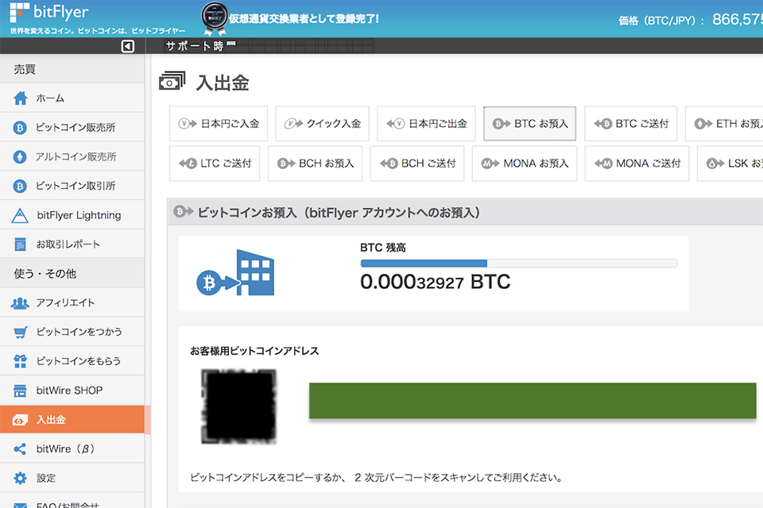
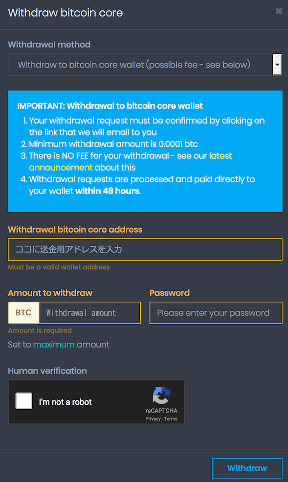
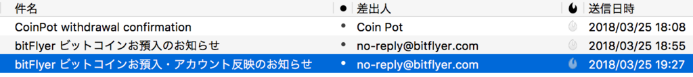

CoinPot で稼いだ仮想通貨同士を両替できた・CoinPot から BitFlyer に送金できた
以前、無料で仮想通貨がもらえる「Faucet」と呼ばれるサービスの一つである、CoinPot とその関連サービス群を紹介した。
あれからチマチマ貯めたり、しばらくサボったりしていて約3ヶ月経った。デイリーボーナスを犠牲にしたので貯まりは悪かったのだが、少し見直してみた。
CoinPot にログインして各仮想通貨のダッシュボードを見てみると、「Convert Bitcoin core to...」といったボタンがあった。どうも CoinPot 内で扱える仮想通貨同士を、手数料なしで相互に両替できるようだ。早速、LiteCoin、DogeCoin、DashCoin を BitCoin Core に移し替えてみた。
これで 0.00032927btc になっていたので、最終的に日本円に換金できそうな別のサービスに移せないか試してみた。
なんと今は CoinPot のキャンペーン中みたいで、最低送金可能額が大幅に引き下げられ、手数料が無料になっているので、このチャンスを逃してはならないと、送金に踏み切った。
Good news! Changes to bitcoin core wallet withdrawal limit and fees
Posted: 2018-02-26 19:30 UTC
As you may know, due to recent significant improvements to the bitcoin network the current mining fees are extremely low and appear to remain so for the foreseeable future.
Therefore we are very happy to announce that we have made the following changes to CoinPot bitcoin core wallet withdrawal limit and fees... - The minimum withdrawal limit has been reduced from 0.00025 btc (25,000 satoshi) down to 0.0001 btc (10,000 satoshi) - Withdrawal fees have been completely removed! Previously there was a 0.00002 btc (2,000 satoshi) fee for withdrawals of less than 0.001 btc (100,000 satoshi) PLEASE NOTE: If the network mining fees rise again then we will of course have to review this and we may need to re-introduce withdrawal fees and/or raise the withdrawal limit again.
- 参考：CoinPot | Cryptocurrency microwallet … CoinPot 公式のアナウンス。
自分は BitFlyer、CoinCheck、Zaif のアカウントを持っているが、今回は BitFlyer のアカウントに送金してみることにした。

このCoinPot は Zaif (ザイフ) や bitFlyer (ビットフライヤー) など他の取引所に送金できることを当メディア編集者が確認済み。
まずは BitFlyer にログインし、左メニューの「入出金」→「BTC お預入」と進み、BitCoin の入金用アドレスをコピーする。

↑上のキャプチャはモザイクをかけてあるが、緑色の部分に入金用アドレス文字列があるのでコレをコピーする。
CoinPot のダッシュボードに戻り、「Withdraw bitcoin core」ボタンを押下する。送金画面で先程の入金用アドレスと送金額を入力し、「Withdraw」ボタンで送金手続きを始める。

CoinPot から確認用メールが届くので押下すると、送金依頼が確定できる。あとは48時間以内に送金が完了するのを待つのみ。自分の場合は2時間弱で、BitFlyer から「入金されました」というメールが届き、無事送金が完了した。

0.00032927btc は、現在の日本円にして283円程度…。だが、元手0円で始めて、サボりながらもポチポチしていただけで、300円弱の BitCoin を手に入れていた、という点は重要。デイリーボーナスや紹介者精制度を活用できればもっと稼げるだろうし、元手がかかっていないので何かあっても損した気はしないだろう。
今後も合間を見てポチポチしていき、仮想通貨を貯めていこうと思う。